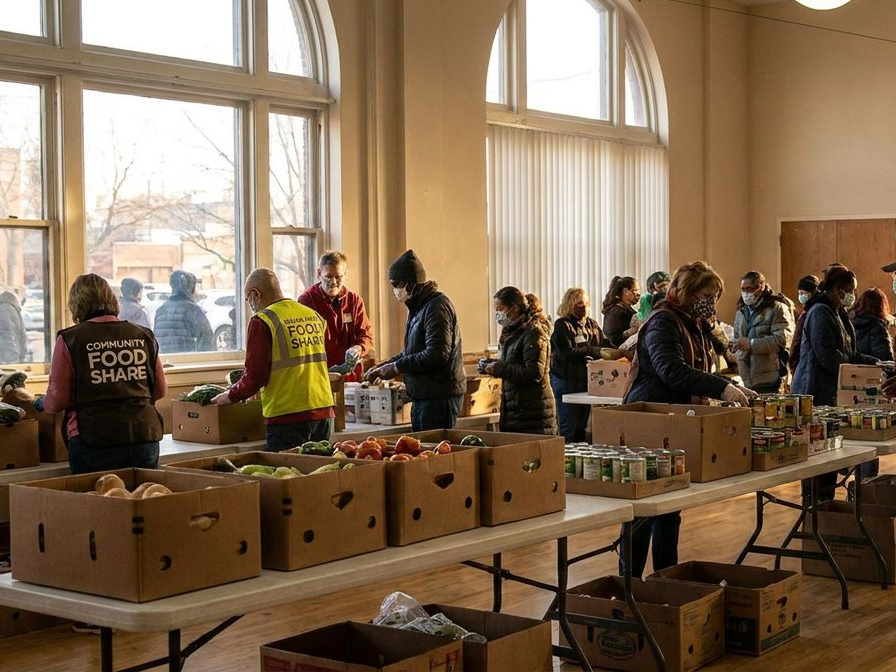
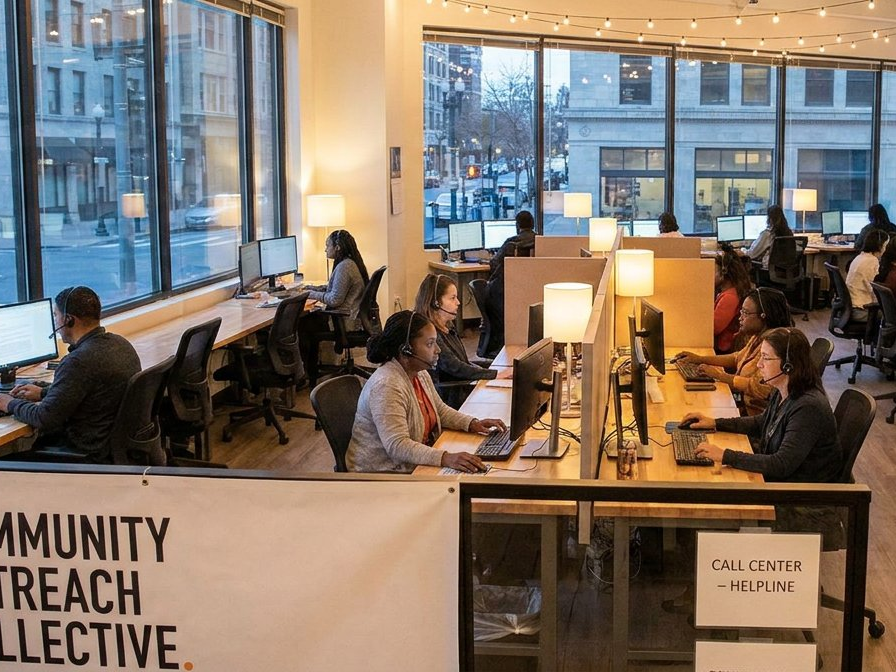

Connecting your donors, your volunteers, and the causes your non-profit organization serves requires complex technology. Managing that technology shouldn't take you or your staff away from your core mission. Let DTCloudOn help you serve your community and connect your members, all while effectively meeting your goals.
We'll work as your partner, managing your entire IT infrastructure and taking the pressure off your internal team. For any size organization, we'll evaluate your IT needs and develop a plan that centers around your work, simplifies your operations, and provides ongoing support when and where you need it most.
Get specialized non-profit IT support →To help you stay focused on your cause or charitable operation, we offer complete IT services, including 24/7 monitoring, offering peace of mind that your IT needs will always be met.

When you reach out to DTCloudOn, we'll assess your needs and build a plan that meets your goals for the present and the future. We'll be by your side as your needs change, helping you navigate diverse IT solutions as your organization grows.
It's all part of the ongoing partnership DTCloudOn is known for — technology support that adapts as your mission and your community do.
Start building your IT plan →
Contact DTCloudOn to see how we can manage and protect your non-profit's IT infrastructure today.
Contact Us →IT services for non-profit organizations focus on managing and securing technology that supports donor engagement, volunteer coordination, and program delivery. These services help non-profits operate efficiently while keeping technology aligned with their mission.
IT services are designed to be scalable and cost-aware, allowing non-profits to access enterprise-level support without the expense of a full internal IT team. Cloud solutions and managed services help reduce infrastructure and maintenance costs.
Cybersecurity services protect donor and member data through secure access controls, monitoring, and data protection practices. This helps maintain trust and safeguards sensitive personal and financial information from cyber threats.
Yes. Cloud services and secure connectivity allow staff and volunteers to access systems from different locations, supporting remote work, field operations, and community outreach while maintaining centralized oversight.
Managed IT services provide continuous monitoring and support, reducing downtime and technical disruptions. This allows non-profit staff to focus on programs and outreach rather than troubleshooting technology issues.
IT plans are built to grow with the organization, supporting new programs, users, and locations without major system changes. This ensures technology remains aligned with evolving operational needs.
Yes. IT procurement services help identify, source, and deploy hardware and software suited to non-profit operations, ensuring technology investments are practical, reliable, and mission-focused.
By outsourcing IT management and support, non-profits can dedicate more time and resources to serving their communities, while IT professionals handle infrastructure, security, and ongoing system performance.
Talk to a DTCloudOn specialist who understands non-profits — from donor-data protection to cost-aware, mission-focused technology.
Request a Free Consultation →